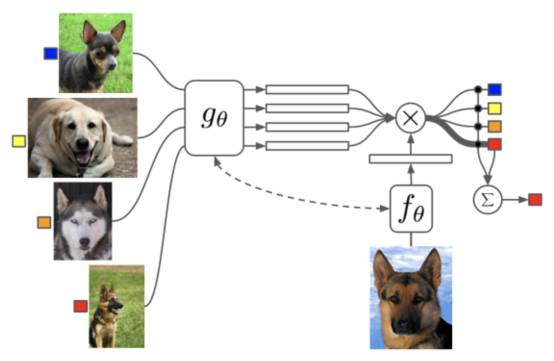
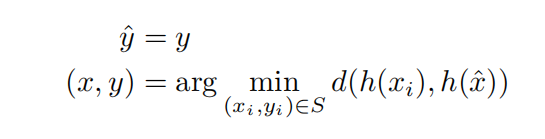
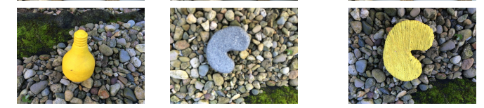

当人工智能
遇上心理学
2017年，谷歌的DeepMind团队的一篇论文《Cognitive Psychology for Deep Neural Networks: A Shape Bias Case Study》（深度神经网络的认知心理学：一个形状偏差的案例研究）被国际机器学习学会（IMLS）收录。 先简单介绍一下DeepMind团队，代表项目便是世界闻名的人工智能系统AlphaGo，曾击败了李世石、柯洁等世界最顶尖的围棋棋手。
在这篇论文中，DeepMind团队认为深度神经网络（Deep Neural Network，DNN）决策过程与人类认知过程也许有相似之处，并利用已经提出的认知心理学（Cognitive Psychology）中的人类认知过程假设来研究神经网络的决策过程。他们也认为无论是认知心理学方法或是深度神经网络，在小样本的词汇学习中均具有形状偏好（简单来说就是更容易以形状为特征进行分辨）。
论文采用认知心理学中常用的一种实验方法，假设检验（Hypothesis Testing），即首先提出针对人认知过程的特点（如看物体的时候是看颜色还是看形状）的假设，后根据假设设计实验进行验证。本文利用该方法的优点在于认知心理学的研究中的假设已经很多，并且看起来都有理有据，只需要验证这些假设是否在神经网络中成立即可。
采用的深度神经网络模型的训练和使用如下：  就用图上的例子简单来说，先用各种不同类型的狗的图像对这个深度神经网络模型进行模型训练，训练完成后，可以理解为这个神经网络已经可以识别不同类型的狗了，那么我们往这个模型中输入一张狗的图片，这个深度神经网络就会告诉我们这个狗是哪个种类的。
具体实施方法：
本文使用单样本学习（One-shot Learning）进行实验，给已经训练好的神经网络一个新的样本，观察神经网络将其分为已学习类别中的哪一类。分类公式如下：

其中分类的依据为新样本特征向量与已学习类型的特征向量中距离最近的样本，这里的距离可以为欧氏空间向量距离或余弦距离，我个人偏向于欧氏空间向量距离，更方便做同态加密来保护样本数据隐私（职业病犯了。。。emmmmmmm）。
在数据集的采用上，论文采用了专门适配于认知心理学实验的Cognitive Psychology Probe Data数据集，主要特征为颜色和形状，如下图： 
对形状偏好的衡量指标：DeepMind团队提出了一种量化的形状偏好指标衡量方法，如下图：
最后多次实验的结果：在Cognitive Psychology Probe Data数据集上，Bs的结果为0.68，并且在DeepMind自己构建的数据集中，Bs的值为0.97。 因此可以得出结论，在认知心理学方法的背景下，神经网络识别时更偏好于识别形状而非颜色。
个人感悟：这种借鉴认知心理科学的研究方法来研究人工智能中的深度学习，尤其是神经网络的过程非常值得借鉴。 神经网络是模仿人类神经元建造的，但目前无论是计算复杂度还是连接方式，亦或是利用数据的方式，都与生物神经元存在较大区别。 因此，借鉴认知心理学，亦或是再宏观一些的理论心理学方法和生物信息学方法，相信研究者们能更深层次理解神经网络，从而改善其结构、计算过程，让其不仅性能良好，并且不再是一个黑盒，而是可探究原理的计算模型。
参考文献：
[1] Samuel Ritter, David G.T. Barrett, Adam Santoro, Matt M. Botvinick. Cognitive Psychology for Deep Neural Networks: A Shape Bias Case Study. In: Proceedings of the 34th International Conference on Machine Learning. Proceedings of Machine Learning Research (2017)